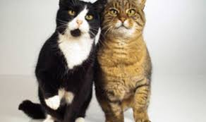

How the Adoption Process Works
Complete the Adoption Application Form available in
our
store.
After assessing your application, we will set up an
appointment to meet the animals.
Following the meeting, we will arrange a property
inspection.
If needed, we can organize a meet and greet with other pets
in
your home.
Once the property inspection is approved, we'll schedule a final
appointment
to finalize the adoption, complete the paperwork, and pay the adoption fee.
A non-refundable deposit of R100 is required to book
the
appointment, which will be subtracted from the total adoption fee.

Puppies
Adult Dogs

Kittens

Adult Cats
Adoption Fees
| Animal Type | Age Group | Adoption Fee |
|---|---|---|
| Puppies and Dogs | Up to 5 years | R950.00 |
| Dogs | 6 years and older | R725.00 |
| Adult Dogs | 10 years and older | R150.00 |
| Kittens | Any age | R700.00 |
| Adult Cats | Any age | R500.00 |
Guidelines for Pet-Friendly Properties
- The yard should provide plenty of space for play and exercise.
- Outdoor dogs need access to shaded areas and clean drinking water.
- Any potential hazards, like exposed wires or harmful chemicals, should be removed.
- Enclosures for younger pets must be secure and routinely checked.
- Special requirements might be needed for pets with unique needs.